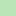

<!doctype html>
<html lang="en">
    <head>
        <meta charset="utf-8">
        <meta http-equiv="X-UA-Compatible" content="IE=edge">
        <meta name="viewport" content="initial-scale=1,user-scalable=no,maximum-scale=1,width=device-width">
        <meta name="mobile-web-app-capable" content="yes">
        <meta name="apple-mobile-web-app-capable" content="yes">
        <meta name="author" content="mitxel-m"> <meta name="keywords" content="IGN,ATES">
		<link rel="stylesheet" href="css/leaflet.css">
        <link rel="stylesheet" href="css/qgis2web.css"><link rel="stylesheet" href="css/fontawesome-all.min.css">
        <style>
        #map {
            width: 600px;
            height: 600px;
        }
		</style>
        <title></title>
    </head>
    <body>
        <div id="map">
        </div>
        <script src="js/qgis2web_expressions.js"></script>
        <script src="js/leaflet.js"></script>
        <script src="js/leaflet-svg-shape-markers.min.js"></script>
        <script src="js/leaflet.rotatedMarker.js"></script>
        <script src="js/leaflet.pattern.js"></script>
        <script src="js/leaflet-hash.js"></script>
        <script src="js/Autolinker.min.js"></script>
        <script src="js/rbush.min.js"></script>
        <script src="js/labelgun.min.js"></script>
        <script src="js/labels.js"></script>
		<script src="js/leaflet-tilelayer-wmts.js"></script>
        <script src="data/ATES_0.js"></script>
        <script src="data/Avalanchas_1.js"></script>
        <script src="data/Itinerarios_2.js"></script>
        <script src="data/Puntosdedecisin_3.js"></script>
        <script>
        var map = L.map('map', {
            zoomControl:true, maxZoom:16, minZoom:10, zoomDelta:2, zoomSnap:2, center: [42.80, -0.27], zoom: 12, maxBounds: ([[42.70,-0.80],[42.90,-0.15]]),
        });
        var hash = new L.Hash(map);
        map.attributionControl.setPrefix('<a href="https://github.com/tomchadwin/qgis2web" target="_blank">qgis2web</a> &middot; <a href="https://leafletjs.com" title="A JS library for interactive maps">Leaflet</a> &middot; <a href="https://qgis.org">QGIS</a>');
        var bounds_group = new L.featureGroup([]);
        
		map.createPane('pane_base_0');
        map.getPane('pane_base_0').style.zIndex = 100;
       		
		var layer_IGN = L.tileLayer.wmts('http://www.ign.es/wmts/mapa-raster?', {
            layer: 'MTN',
            tilematrixSet: 'GoogleMapsCompatible',
            format: 'image/jpeg',
            style: 'default',
            className: 'base',
			uppercase: true,
            transparent: false,
            continuousWorld : false,
            opacity: 1.0,
            attribution: '<a href="https://www.ign.es" target="_blank">IGN</a>', 
        });
        map.addLayer(layer_IGN);
        bounds_group.addLayer(layer_IGN);
      
        map.createPane('pane_ATES_0');
        map.getPane('pane_ATES_0').style.zIndex = 400;
        map.getPane('pane_ATES_0').style['mix-blend-mode'] = 'multiply';
        var layer_ATES_0 = new L.tileLayer('tiles/{z}/{x}/{y}.png', {
        minZoom: 12,
        maxZoom: 16,
        tms: true,
		pane: 'pane_ATES_0',
        attribution: '<a href="https://montanasegura.com/cartografia-ates-en-el-macizo-de-infiernos/" target="_blank">ATES</a>'
      });
        bounds_group.addLayer(layer_ATES_0);
        map.addLayer(layer_ATES_0);
        function pop_Avalanchas_1(feature, layer) {
            var popupContent = '<table>\
                    <tr>\
                        <td colspan="2">' + (feature.properties['Name'] !== null ? Autolinker.link(String(feature.properties['Name'])) : '') + '</td>\
                    </tr>\
                    <tr>\
                        <td colspan="2">' + (feature.properties['description'] !== null ? Autolinker.link(String(feature.properties['description'])) : '') + '</td>\
                    </tr>\
                </table>';
            layer.bindPopup(popupContent, {maxHeight: 400});
        }

        function style_Avalanchas_1_0() {
            return {
                pane: 'pane_Avalanchas_1',
                opacity: 1,
                color: 'rgba(247,99,0,1.0)',
                dashArray: '',
                lineCap: 'round',
                lineJoin: 'bevel',
                weight: 5.0,
                fillOpacity: 0,
                interactive: false,
            }
        }
        map.createPane('pane_Avalanchas_1');
        map.getPane('pane_Avalanchas_1').style.zIndex = 401;
        map.getPane('pane_Avalanchas_1').style['mix-blend-mode'] = 'normal';
        var layer_Avalanchas_1 = new L.geoJson(json_Avalanchas_1, {
            attribution: '',
            interactive: false,
            dataVar: 'json_Avalanchas_1',
            layerName: 'layer_Avalanchas_1',
            pane: 'pane_Avalanchas_1',
            onEachFeature: pop_Avalanchas_1,
            style: style_Avalanchas_1_0,
        });
        bounds_group.addLayer(layer_Avalanchas_1);
        map.addLayer(layer_Avalanchas_1);
        function pop_Itinerarios_2(feature, layer) {
            var popupContent = '<table>\
                    <tr>\
                        <td colspan="2"><strong>Name</strong><br />' + (feature.properties['Name'] !== null ? Autolinker.link(String(feature.properties['Name'])) : '') + '</td>\
                    </tr>\
                    <tr>\
                        <th scope="row">description</th>\
                        <td>' + (feature.properties['description'] !== null ? Autolinker.link(String(feature.properties['description'])) : '') + '</td>\
                    </tr>\
                    </table>';
            layer.bindPopup(popupContent, {maxHeight: 400});
        }

        function style_Itinerarios_2_0() {
            return {
                pane: 'pane_Itinerarios_2',
                opacity: 1,
                color: 'rgba(255,255,0,1.0)',
                dashArray: '5, 5',
                lineCap: 'round',
                lineJoin: 'round',
                weight: 3.0,
                fillOpacity: 0,
                interactive: false,
            }
        }
        map.createPane('pane_Itinerarios_2');
        map.getPane('pane_Itinerarios_2').style.zIndex = 402;
        map.getPane('pane_Itinerarios_2').style['mix-blend-mode'] = 'normal';
        var layer_Itinerarios_2 = new L.geoJson(json_Itinerarios_2, {
            attribution: '',
            interactive: false,
            dataVar: 'json_Itinerarios_2',
            layerName: 'layer_Itinerarios_2',
            pane: 'pane_Itinerarios_2',
            style: style_Itinerarios_2_0,
        });
        bounds_group.addLayer(layer_Itinerarios_2);
        map.addLayer(layer_Itinerarios_2);
        function pop_Puntosdedecisin_3(feature, layer) {
            var popupContent = '<table>\
                    <tr>\
                        <td colspan="2">' + (feature.properties['fid'] !== null ? Autolinker.link(String(feature.properties['fid'])) : '') + '</td>\
                    </tr>\
                    <tr>\
                        <td colspan="2">' + (feature.properties['Name'] !== null ? Autolinker.link(String(feature.properties['Name'])) : '') + '</td>\
                    </tr>\
                    <tr>\
                        <td colspan="2">' + (feature.properties['description'] !== null ? Autolinker.link(String(feature.properties['description'])) : '') + '</td>\
                    </tr>\
                </table>';
            layer.bindPopup(popupContent, {maxHeight: 400});
        }

        function style_Puntosdedecisin_3_0() {
            return {
                pane: 'pane_Puntosdedecisin_3',
                shape: 'diamond',
                radius: 8.8,
                opacity: 1,
                color: 'rgba(0,0,0,1.0)',
                dashArray: '',
                lineCap: 'butt',
                lineJoin: 'miter',
                weight: 2.0,
                fill: true,
                fillOpacity: 1,
                fillColor: 'rgba(255,255,0,1.0)',
                interactive: true,
            }
        }
        map.createPane('pane_Puntosdedecisin_3');
        map.getPane('pane_Puntosdedecisin_3').style.zIndex = 403;
        map.getPane('pane_Puntosdedecisin_3').style['mix-blend-mode'] = 'normal';
        var layer_Puntosdedecisin_3 = new L.geoJson(json_Puntosdedecisin_3, {
            attribution: '',
            interactive: true,
            dataVar: 'json_Puntosdedecisin_3',
            layerName: 'layer_Puntosdedecisin_3',
            pane: 'pane_Puntosdedecisin_3',
            onEachFeature: pop_Puntosdedecisin_3,
            pointToLayer: function (feature, latlng) {
                var context = {
                    feature: feature,
                    variables: {}
                };
                return L.shapeMarker(latlng, style_Puntosdedecisin_3_0(feature));
            },
        });
        bounds_group.addLayer(layer_Puntosdedecisin_3);
        map.addLayer(layer_Puntosdedecisin_3);
        var baseMaps = {};
        L.control.layers(baseMaps,{' Puntos cruciales': layer_Puntosdedecisin_3,' Itinerarios': layer_Itinerarios_2,' Avalanchas': layer_Avalanchas_1,'Terreno:<br /><table><tr><td style="text-align: center;"></td><td>  Simple</td></tr><tr><td style="text-align: center;"></td><td>  Exigente</td></tr><tr><td style="text-align: center;"></td><td>  Complejo</td></tr></table>': layer_ATES_0,},{collapsed:true}).addTo(map);
        </script>
    </body>
</html>
